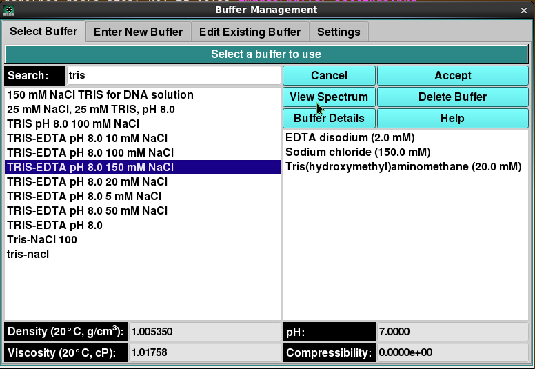

Manage Buffer Information - Select Buffer:

Using this panel, you can select a buffer in the current
database or on the local disk. Most commonly, you select a
buffer in the provided list and click the Accept button
to return it to the caller.
As with all panels, a set of tabs allows you to navigate to
other panels in order to perform specialized subtasks relating
to buffer management. Links to and summaries of the panels are
given in the final section of this page.
Panel Items:
- (buffer list, left-side) The items listed on the
left side are all the descriptions (names) of buffers
available or the descriptions as limited by the Search
text. A single click on a list item selects a buffer.
- (component list, right-side) The items listed on
the right side are the components of the currently selected
buffer, along with each one's concentration. This list is
solely for information purposes.
- Search: Enter a partial description to search for
a specific buffer or set of buffers. Clear the text to expand
to the full list.
- Density The density of the currently selected
buffer.
- Viscosity The viscosity of the currently selected
buffer.
- pH The pH of the currently selected buffer.
- Compressibility The compressibility of the currently
selected buffer.
- Cancel Close the buffer dialog and return to the
caller with no change in buffer selection.
- Accept Close the buffer dialog and return to the
caller with the current buffer selection.
- View Spectrum Open a
Manage Spectrum
dialog showing the Wavelength/Extinction profile associated
with the currently selected buffer.
- Delete Buffer Permanently delete the currently
selected buffer. A confirmation dialog will appear to allow
you to cancel the delete request or to proceed with it.
Upon confirmation, the removal will proceed regardless of any
further action ("Cancel" or "Accept").
- Buffer Details Open a
Buffer Information
dialog showing detailed information about the currently selected
buffer.
- Help Show this documentation.
"Select Buffer" Panel Discussion:
As mentioned above, the most common use of this panel is to select
a buffer in the provided list and click on the Accept button
to return the selected buffer to the caller, such as a
Solution Management dialog.
The panel allows actions beyond simple buffer selection, including
getting buffer information, deleting a buffer, or choosing the buffer
for which non-hydrodynamic modifications are to be made. In summary,
the most common actions for this panel are as follows.
- Select a buffer and Accept it for a caller.
- Select a buffer and modify its non-hydrodynamic characteristics
by selecting the
Edit Existing Buffer panel.
- Select a buffer to obtain information about it, including the
details shown with the Buffer Details button.
- Select a buffer in order to remove it permanently from the
database or local disk, with the Delete Buffer button.
Panel Tab Options:
In each panel, tabs are visible at the top of the window to enable the
user to move to another panel, to perform specific buffer subtasks.
- Select Buffer A panel whose primary
purpose is to select a buffer to return to the caller.
- Enter New Buffer A panel whose primary
purpose is to enter a brand new buffer, defined mostly by specifying
components and each one's concentration.
- Edit Existing Buffer A panel whose
primary purpose is to change non-hydrodynamic characteristics of an
already existing buffer.
- Settings A panel whose primary
purpose is to set Database-or-Disk input, the investigator; or to
synchronize the local buffer components file from the database.
 Manual
Manual